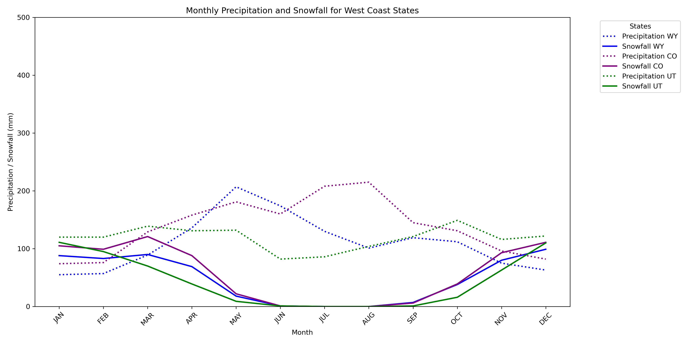
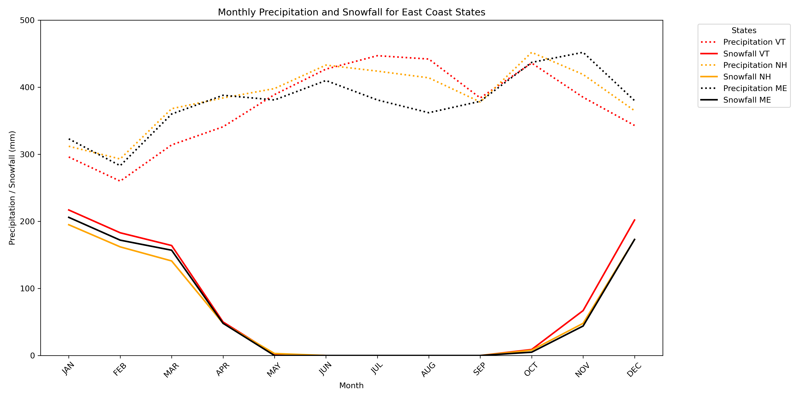

Western Precipitation Trends
A detailed visualization of monthly precipitation patterns across Western ski resorts, highlighting seasonal trends and anomalies.
Altitude vs Social Engagement

A boxplot analysis examining the relationship between resort altitude and social media engagement, revealing variations in user interactions.
Eastern Precipitation Trends
A comprehensive look at monthly precipitation data in Eastern ski resorts, providing insights into regional weather patterns.
Eastern Slope Distribution
An interactive pie chart presenting the distribution of slope types in Eastern ski resorts, emphasizing terrain diversity.
Western Slope Distribution
An interactive pie chart showcasing the breakdown of slope types in Western ski resorts, highlighting key differences in terrain offerings.
Dashboard: Category vs Value
Interactive bar chart showing value distributions by selected categories.